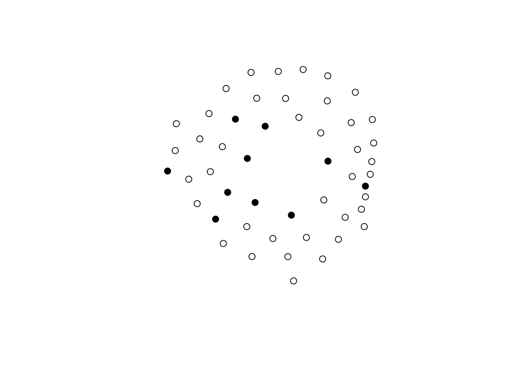
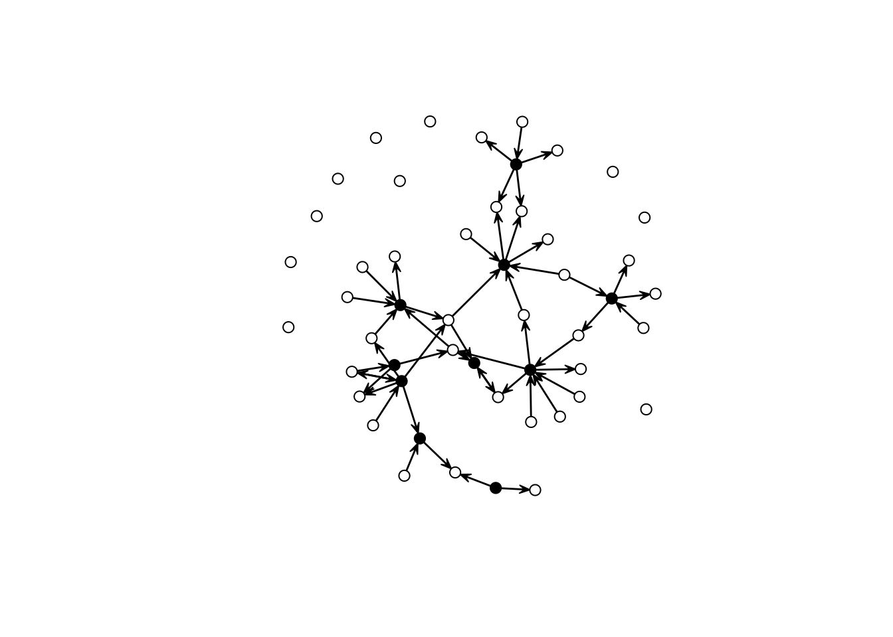
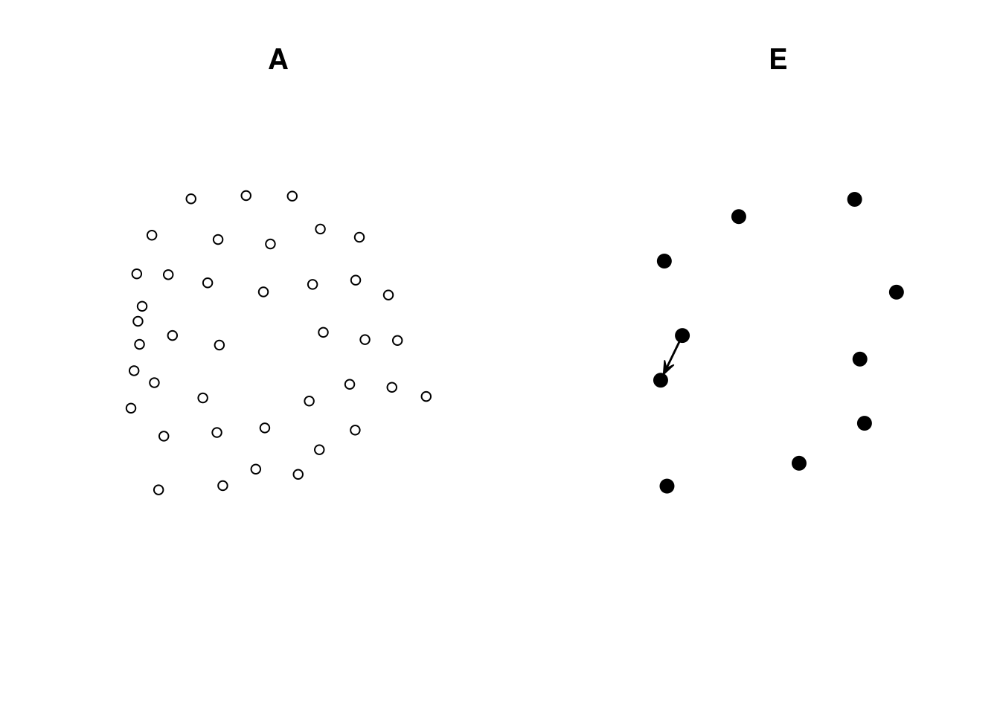
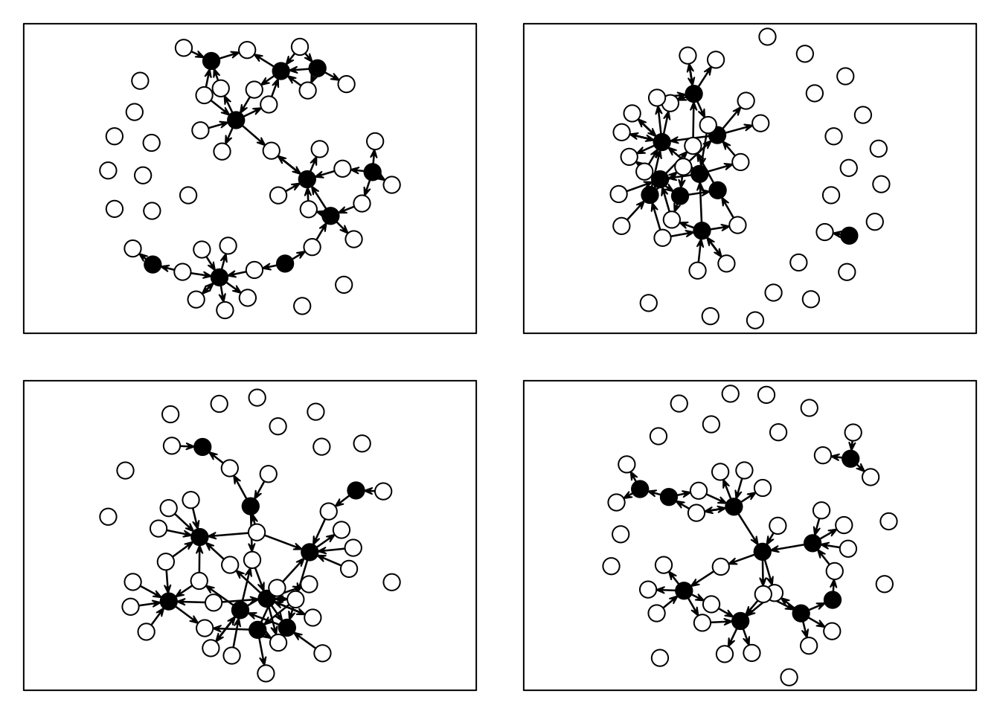

7.1 Example 1: Interlocking egos and disconnected alters
Imagine that we have two sets of vertices. The first, group E, are egos part of an egocentric study. The second group, called A, is composed of people mentioned by egos in E but were not surveyed. Assume that individuals in A can only connect to individuals in E; moreover, individuals in E have no restrictions on connecting. In other words, only two types of ties exist: E-E and A-E. The question is now, how can we enforce such a constraint in an ERGM?
Using offsets, and in particular, setting coefficients to -Inf provides an easy way to restrict the support set of ERGMs. For example, if we wanted to constrain the support to include networks with no triangles, we would add the term offset(triangle) and use the option offset.coef = -Inf to indicate that realizations including triangles are not possible. Using R:
In this model, a Bernoulli graph, we reduce the sample space to networks with no triangles. In our example, such a statistic should only take non-zero values whenever ties within the A class happen. We can use the nodematch() term to do that. Formally
\[ \text{NodeMatch}(x) = \sum_{i,j} y_{ij} \mathbf{1}({x_{i} = x_{j}}) \]
This statistic will sum over all ties in which source (\(i\)) and target (\(j\))’s \(X\) attribute is equal. One way to make this happen is by creating an auxiliary variable that equals, e.g., 0 for all vertices in A, and a unique value different from zero otherwise. For example, if we had 2 As and three Es, the data would look something like this: \(\{0,0,1,2,3\}\). The following code block creates an empty graph with 50 nodes, 10 of which are in group E (ego).
library(ergm, quietly = TRUE)
library(sna, quietly = TRUE)
n <- 50
n_egos <- 10
net <- as.network(matrix(0, ncol = n, nrow = n), directed = TRUE)
# Let's assing the groups
net %v% "is.ego" <- c(rep(TRUE, n_egos), rep(FALSE, n - n_egos))
net %v% "is.ego"## [1] TRUE TRUE TRUE TRUE TRUE TRUE TRUE TRUE TRUE TRUE FALSE FALSE
## [13] FALSE FALSE FALSE FALSE FALSE FALSE FALSE FALSE FALSE FALSE FALSE FALSE
## [25] FALSE FALSE FALSE FALSE FALSE FALSE FALSE FALSE FALSE FALSE FALSE FALSE
## [37] FALSE FALSE FALSE FALSE FALSE FALSE FALSE FALSE FALSE FALSE FALSE FALSE
## [49] FALSE FALSE
To create the auxiliary variable, we will use the following function:
# Function that creates an aux variable for the ergm model
make_aux_var <- function(my_net, is_ego_dummy) {
n_vertex <- length(my_net %v% is_ego_dummy)
n_ego_ <- sum(my_net %v% is_ego_dummy)
# Creating an auxiliary variable to identify the non-informant non-informant ties
my_net %v% "aux_var" <- ifelse(
!my_net %v% is_ego_dummy, 0, 1:(n_vertex - n_ego_)
)
my_net
}Calling the function in our data results in the following:
net <- make_aux_var(net, "is.ego")
# Taking a look over the first 15 rows of data
cbind(
Is_Ego = net %v% "is.ego",
Aux = net %v% "aux_var"
) |> head(n = 15)## Is_Ego Aux
## [1,] 1 1
## [2,] 1 2
## [3,] 1 3
## [4,] 1 4
## [5,] 1 5
## [6,] 1 6
## [7,] 1 7
## [8,] 1 8
## [9,] 1 9
## [10,] 1 10
## [11,] 0 0
## [12,] 0 0
## [13,] 0 0
## [14,] 0 0
## [15,] 0 0We can now use this data to simulate a network in which ties between
A-class vertices are not possible:
set.seed(2828)
net_sim <- simulate(net ~ edges + nodematch("aux_var"), coef = c(-3.0, -Inf))
gplot(net_sim, vertex.col = net_sim %v% "is.ego")
As you can see, this network has only ties of the type E-E and A-E. We can double-check by (i) looking at the counts and (ii) visualizing each induced-subgraph separately:
## edges nodematch.aux_var
## 49 0net_of_alters <- get.inducedSubgraph(
net_sim, which((net_sim %v% "aux_var") == 0)
)
net_of_egos <- get.inducedSubgraph(
net_sim, which((net_sim %v% "aux_var") != 0)
)
# Counts
summary(net_of_alters ~ edges + nodematch("aux_var"))## edges nodematch.aux_var
## 0 0## edges nodematch.aux_var
## 1 0# Figures
op <- par(mfcol = c(1, 2))
gplot(net_of_alters, vertex.col = net_of_alters %v% "is.ego", main = "A")
gplot(net_of_egos, vertex.col = net_of_egos %v% "is.ego", main = "E")
Now, to fit an ERGM with this constraint, we simply need to make use of the offset terms. Here is an example:
ans <- ergm(
net_sim ~ edges + offset(nodematch("aux_var")), # The model (notice the offset)
offset.coef = -Inf # The offset coefficient
)
## Starting maximum pseudolikelihood estimation (MPLE):
## Evaluating the predictor and response matrix.
## Maximizing the pseudolikelihood.
## Finished MPLE.
## Stopping at the initial estimate.
## Evaluating log-likelihood at the estimate.
summary(ans)
## Call:
## ergm(formula = net_sim ~ edges + offset(nodematch("aux_var")),
## offset.coef = -Inf)
##
## Maximum Likelihood Results:
##
## Estimate Std. Error MCMC % z value Pr(>|z|)
## edges -2.843 0.147 0 -19.34 <1e-04 ***
## offset(nodematch.aux_var) -Inf 0.000 0 -Inf <1e-04 ***
## ---
## Signif. codes: 0 '***' 0.001 '**' 0.01 '*' 0.05 '.' 0.1 ' ' 1
##
## Null Deviance: 1233.8 on 890 degrees of freedom
## Residual Deviance: 379.4 on 888 degrees of freedom
##
## AIC: 381.4 BIC: 386.2 (Smaller is better. MC Std. Err. = 0)
##
## The following terms are fixed by offset and are not estimated:
## offset(nodematch.aux_var)This ERGM model–which by the way only featured dyadic-independent terms, and thus can be reduced to a logistic regression–restricts the support by excluding all networks in which ties within the class A exists. To finalize, let’s look at a few simulations based on this model:
set.seed(1323)
op <- par(mfcol = c(2,2), mar = rep(1, 4))
for (i in 1:4) {
gplot(simulate(ans), vertex.col = net %v% "is.ego", vertex.cex = 2)
box()
}
All networks with no ties between A nodes.